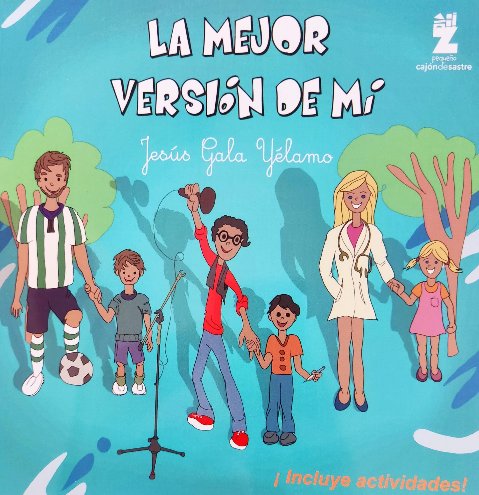
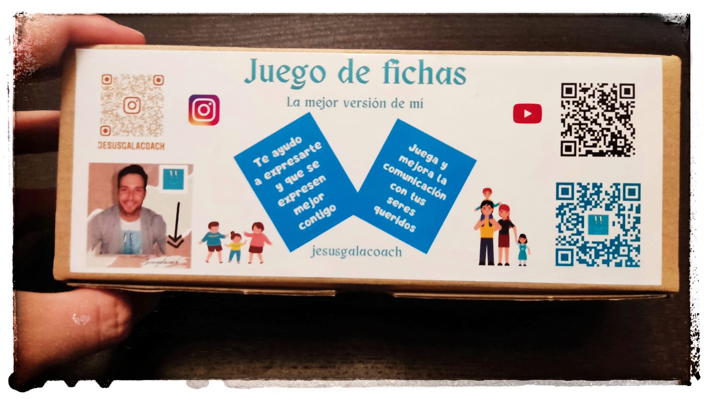

La mejor versión de mí
El coaching es un proceso de desarrollo personal: con la ayuda de un coach, llegas desde donde estás ahora hasta donde quieres estar y todavía no consigues.
Contacta conmigoVer serviciosNos reuniremos en una sesión donde serás escuchado y cuestionado, pero nunca juzgado. Con preguntas que se adaptan a ti, descubrirás las creencias que limitan tu crecimiento y bloquean tus capacidades.
Con el plan de los 21 días (con o sin asesoramiento) podrás hacer tu propio «autocoaching»: descubrir qué quieres de verdad, organizarte mejor y priorizar tus objetivos.
También hago formaciones en empresas y colegios para mejorar la productividad, el ambiente y el compañerismo.
Consigue tu plan de 21 días, el cuento o el juego de fichas por mis redes o en contacto. Rellena esta encuesta y recibirás online un regalito para dar el primer paso hoy (si no te llega, pídemelo por redes o WhatsApp).
Formaciones en empresas
Formaciones en colegios
Tráiler del cuento
Cuento, juego de fichas y pack

El cuento
Comprar